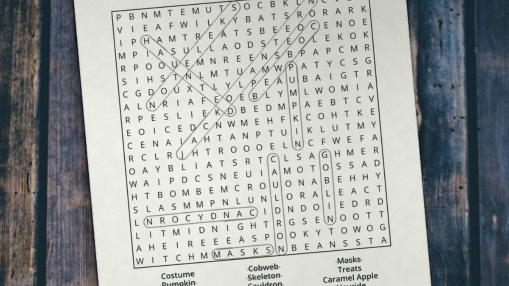

October 12, 2026 · By Pixel Punk Studio
Word searches look simple, but a few habits make them much faster and more satisfying. Here are the strategies most puzzle fans use, from beginner to "I can't stop".
9 tips to find words faster
- Look for the rare letters first. Q, Z, X, J and K don't appear often, so a word like "Zenith" or "Jellyfish" is quickest to find by hunting for its unusual letter.
- Search for double letters. Pairs like "ee", "oo" or "ll" stand out in a grid. Words such as "Cocoa" or "Balloon" jump out once you spot them.
- Start with the longest words. Long words cross more of the grid and are easier to see. Once they are circled, the shorter words have fewer places to hide.
- Scan row by row, then column by column. Instead of looking everywhere at once, run a finger along each row for the first letter of the word you want.
- Remember the directions. In most adult puzzles words can run forwards, backwards, up, down and diagonally. Many players forget the backward diagonals, so check those last.
- Use the shape of the word. For a word with an unusual pair of letters, like "wh" in "Wheelbarrow", look for that pair rather than the first letter.
- Cross off as you go. Strike each word on the list as soon as you find it, so you never search for the same word twice.
- Change your angle. Stuck? Turn the page sideways or upside down. A fresh view often reveals the word you've been staring past.
- Take a break. The last word is always the hardest. Come back after a cup of tea and it is often right there.
Which puzzles are best for practice?
Themed puzzles are easiest to start with, because the words fit together and you can guess what to look for. Large print grids are also more comfortable for longer sessions. Try the free printables below: each one has 30 themed words and the full solution.